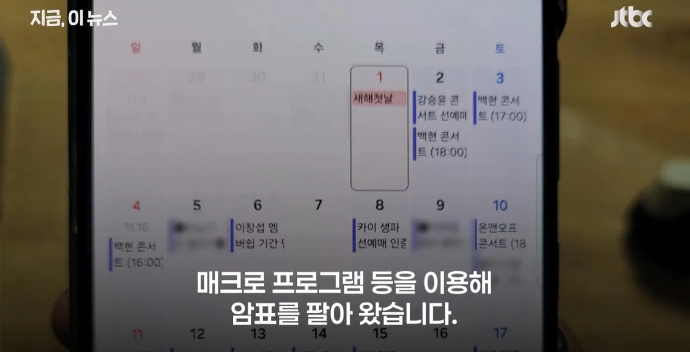
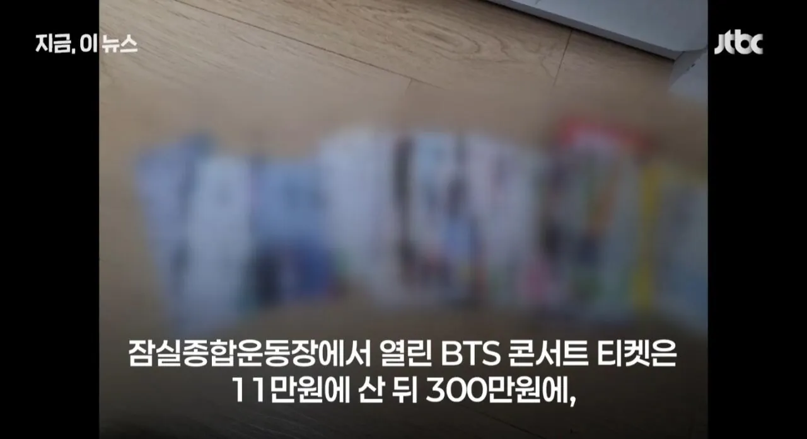
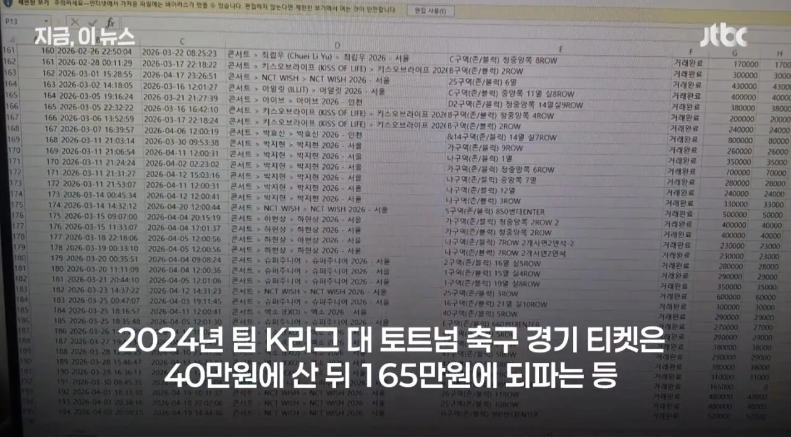
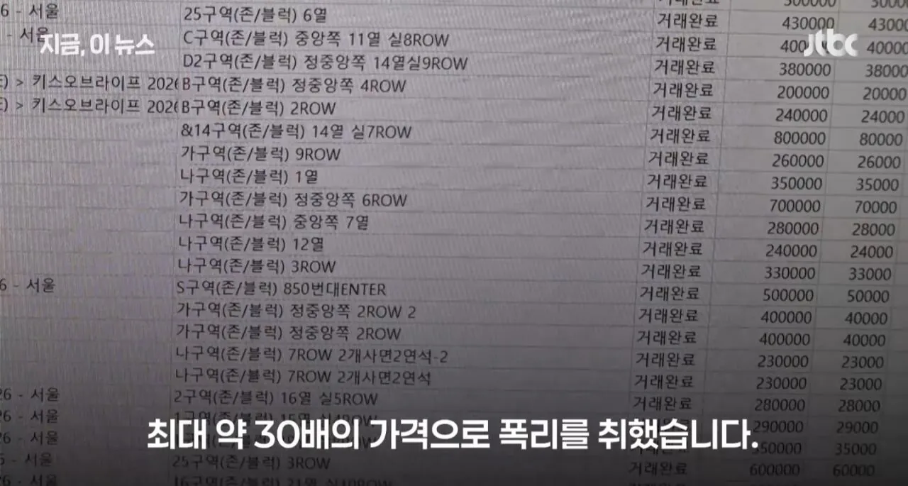
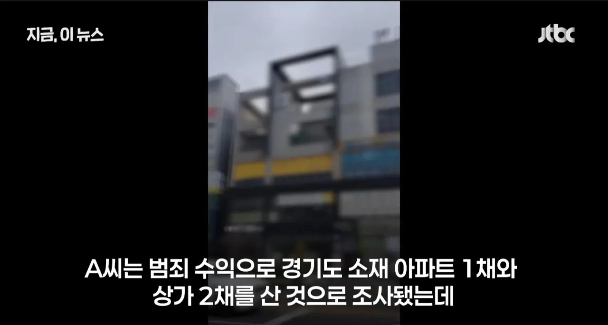

63 · 3 · 7 시간 전 · 원문





직장도 없는데 집 샀다가 걸림 ㅋㅋㅋㅋㅋㅋㅋㅋㅋㅋ
수집 당시 댓글 3개
대바크사컹 · 2 시간 전
타이어가게나 셀프세차장 으로 돈세탁 했어야지 ㅉㅉ
네비두라 · 58 분 전
그래서 도박장에서 수십억 잃었다는 사람이 나오지
대박나고싶다 · 24 분 전
매매가 아니더라도 증명 안된 돈이 들어오면 세무대상 아님??
타이어가게나 셀프세차장 으로 돈세탁 했어야지 ㅉㅉ